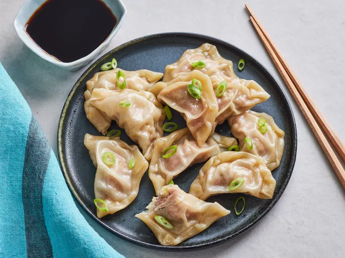

Pork Dumplings

Description
If you're looking for the best steamed pork dumplings recipe
on the internet, you've come to the right place.
These pork dumplings are as easy to assemble and steam as they are to eat.
Ingredients
- 100 (3.5 inch square) wonton wrappers
- 1 3/4 pounds ground pork
- 1 tablespoon minced fresh ginger root
- 4 cloves garlic, minced
- 2 tablespoons thinly sliced green onion
- 4 tablespoons soy sauce
- 3 tablespoons sesame oil
- 1 egg, beaten
- 5 cups finely shredded Chinese cabbage
Steps
-
Mix the pork, ginger, garlic,
green onion, soy sauce, sesame oil,
egg, and cabbage in a large bowl.
-
Place a teaspoon of filling onto each wonton skin,
then moisten the edges with water and fold diagonally
to create a triangle. Roll the edges to seal in the filling.
Transfer the dumplings to a lightly floured surface until you're ready to cook.
-
Arrange the pork dumplings in a steamer so that they're
not touching. Steam until the pork is cooked through.